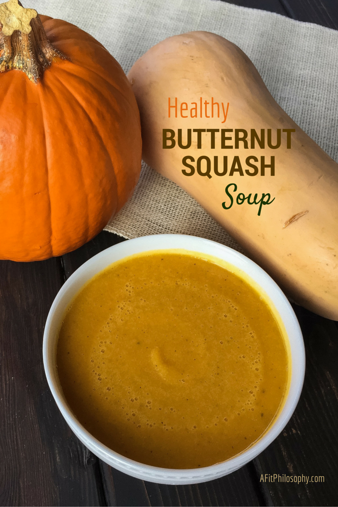
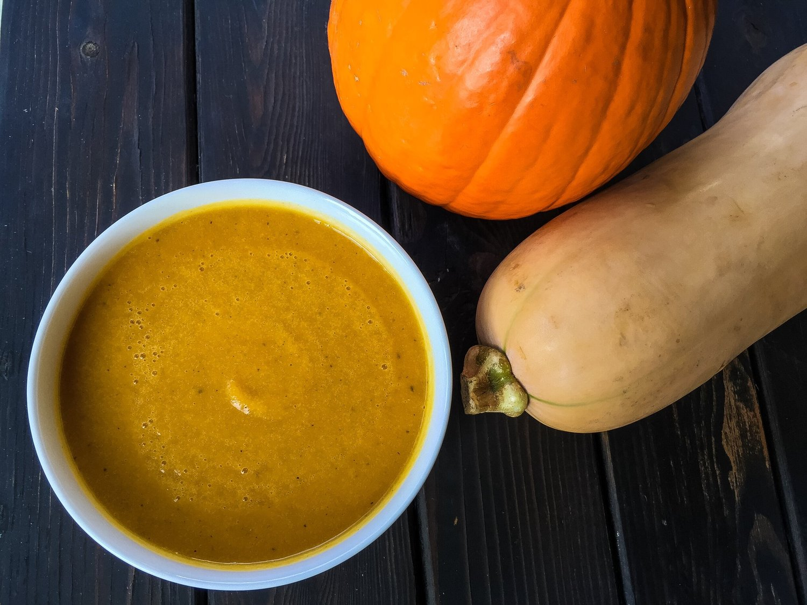
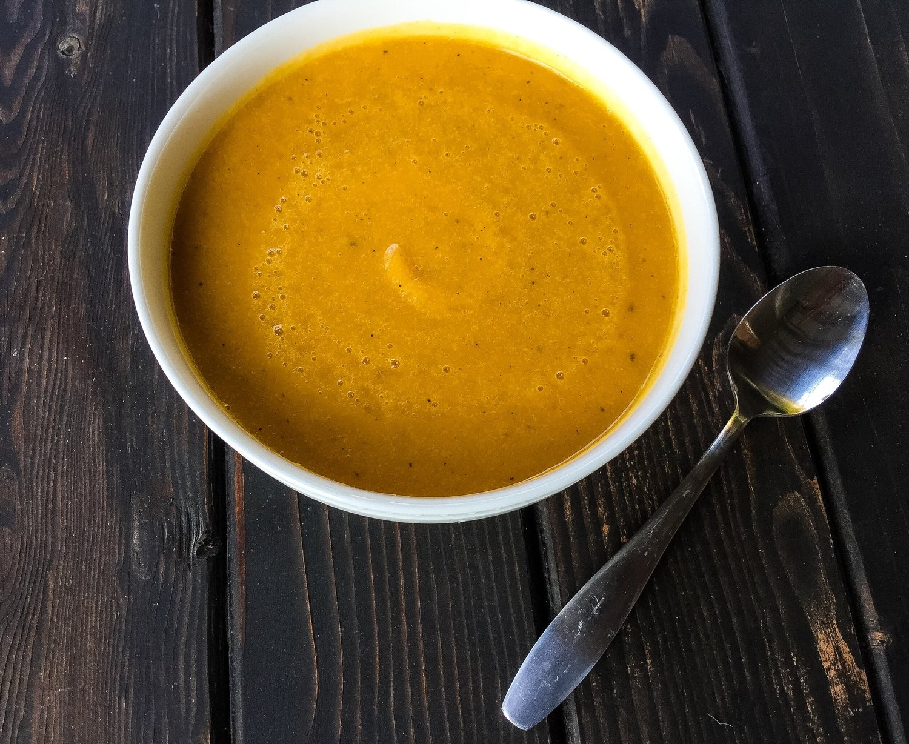
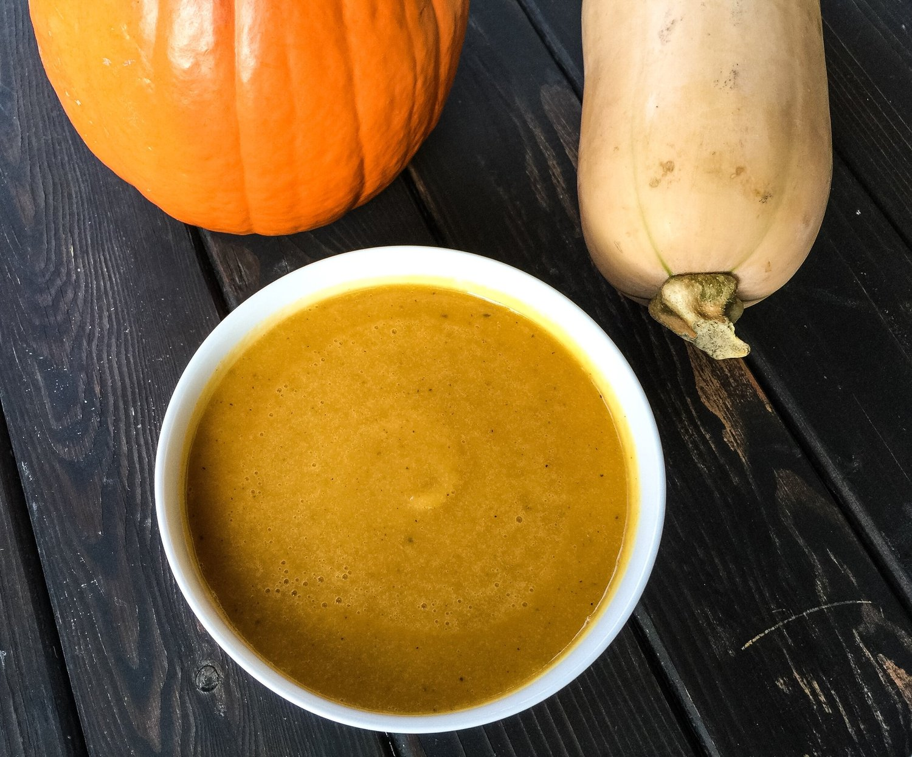
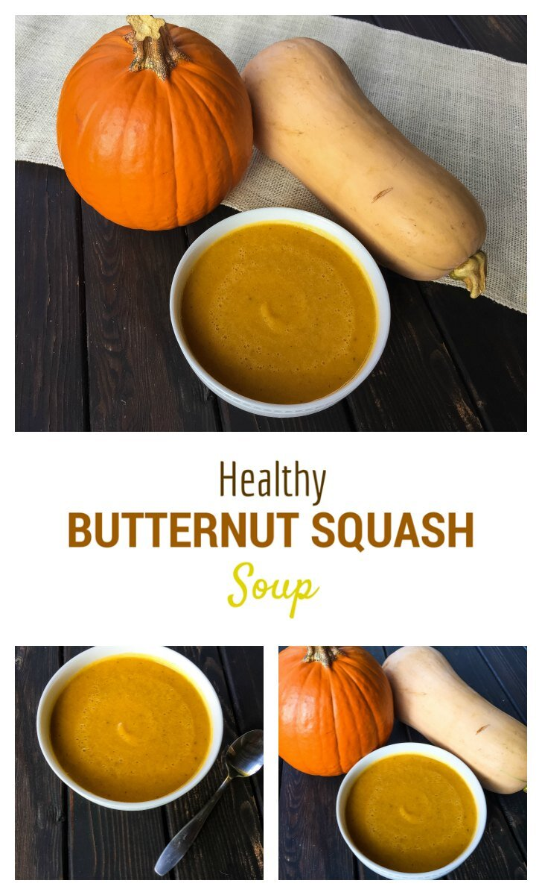

Healthy Butternut Squash Soup [GUEST POST]

Butternut Squash Soup 1

Butternut Squash Soup 2

Butternut Squash Soup 3

Butternut Squash Soup 4
Hey guys! A little something different this week. :) I decided to do a recipe swap with a lovely lady named Natalie over at A Fit Philosophy blog. I noticed Natalie and I have very similar baking & cooking styles, and I knew she would be a perfect fit for a guest blog post. She advocates that healthy eating ISN'T boring, she's a pro at gluten free recipes, and most importantly she has a love for protein pancakes!! Yep, loved her instantly. Definitely a fan. To see my guest recipe, head on over to her blog. It's a great one - Butternut Squash Pasta with Shrimp and Sage. Okay but yeah that's it; here's Natalie!
When Kim and I set out to do this recipe swap, we decided to challenge each other to make something that was a bit more on the savory side of things! Since we both have a MAJOR SWEET TOOTH, we thought it would be a great culinary challenge to test our creativity and come up with a savory selection for our readers! (*cough* *cough*…as you can tell by both of our recipe categories, our sweets much outweigh our savory selections)
Well, just like our mutual love for sweets, it seems as though our savory pallets also desire the same sort of flavors! I have to agree with Kim on this one, that the best thing about fall is squash! Butternut squash to be exact! I’m sure there are many other reasons for why fall is hands down the best season (well obviously, because it is), but I beg to differ!
Another super random fact about butternut squash and why it’s seriously the COOLEST THING since sliced gluten free bread, is that it’s actually a fruit!!! Did you know that?? Haha, Okay, fine I didn’t either until writing this post, but isn’t that just SO COOL!?! I guess it all makes sense now why Kim and I also share a mutual love for our butternut squash…because it’s a fruit…not a vegetable after all!
Well, cooler temps are starting to reach most places in the United States (hopefully California soon too), which means it’s time for that warm, ooey-gooey, melt your heart, comfort food we all love so much! With this recipe, you’ll get all of that comfort food feeling you need to warm you up and make you feel cozy and satisfied, without having to feel like you’ve just consumed an entire carton of heavy cream! And what could be better than a big ol’ bowl of butternut squash?? Nothing but a BIG OL’ BOWL OF BUTTERNUT SQUASH, of course :)
I hope you’ve enjoyed this recipe and I’d love to hear your thoughts! Let me know on Instagram, Facebook, Twitter or my blog!
XoXo Natalie
Healthy Butternut Squash Soup
Yield: 6 Servings
-
3 Cups Butternut Squash, cubed (I used the pre-cut Trader Joe’s Butternut Squash – 3 packages)
-
¾ Cup Carrot, diced
-
1 ½ Garlic Cloves
-
1 ½ tsp. Sage
-
1 ½ tsp. Thyme
-
3 Cups Low Sodium Vegetable Broth (Can use Water or Low Sodium Chicken Broth)
-
¾ Cup Unsweetened Almond Milk
-
Salt & Pepper, to taste
In a medium pot, bring water to a boil and add butternut squash cubes and carrot. Cook until soft, about 15 minutes and drain. Place all ingredients in a blender and blend until smooth. Season with salt and pepper to your liking. (Note – blending will intensify the taste of salt and pepper, so I suggest adding after blending). Pour into bowls, serve, & enjoy!

Butternut Squash Soup 5